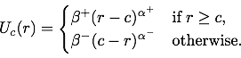

This tool is designed to help choose user utility function U(r) parameters for the generation of
release probability mass P(r) that affords ε-differential privacy.
Utility Function
The noise utility at point r between rmin and rmax given real count c is given by
the function U defined as:

Parameters
Double-click values to edit or select a preset, then click "Recompute".